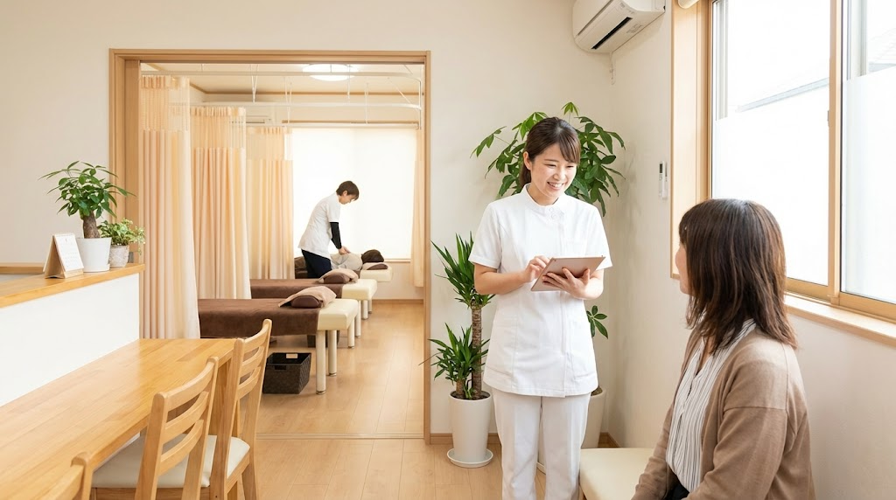
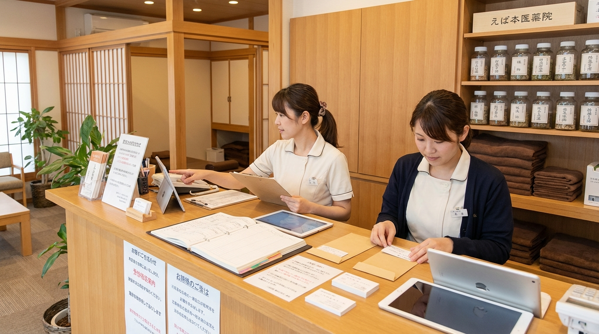

来院後フォローが後回しになる
施術後に連絡文を考え直すため、返信や案内が遅れやすい。

整骨院・鍼灸の AI 活用・業務改善
来院後フォロー・施術説明・再来案内を、現場で回る形に整える伴走型 AI コンサル
AI-SABI が、課題整理から活用方針、ツール選定、連携・自動化設計、定着支援まで伴走し、整骨院・鍼灸の業務改善を現場に合う形で進めます。来院後フォロー、施術説明整理、再来案内、受付共有など、成果が見えやすい業務から整え、必要に応じて半自動化や自動化候補まで設計します。
現場で起きやすい課題
施術後に連絡文を考え直すため、返信や案内が遅れやすい。
注意事項や通院案内の書き方が人によってばらつきやすい。
予約案内やフォロー文を毎回整える負担がある。
来院時の申し送りや注意点が口頭中心になり、共有漏れが起きやすい。
現場目線で変える 4 ステップ
来院後フォロー、説明整理、再来案内のどこが重いかを整理します。
まずは効果が見えやすい 1 業務を決めます。
下書き支援、問い合わせ整理、共有、連携まで、どこまで任せるかを設計します。
院内ルールや既存の受付フローに合わせて整え、続けやすい形へ伴走します。
現場目線で変える業務
現場目線で選ばれる 3 つの理由
小さく始めて広げやすい
最初に全体を変えるのではなく、受付と施術後の流れで効果が見えやすい業務から整えます。だから、現場でも受け入れやすく、運用も広げやすくなります。

活用範囲まで設計する
案内文、問い合わせ整理、院内共有、予約導線などを分けて考え、どこまで任せるかを整理します。そのため、現場に合う範囲で無理なく改善できます。
現場に合わせて定着させる
単に文案を作るだけでなく、受付フロー、確認ルール、共有方法、既存ツールとのつなぎ方まで含めて整えます。そのため、担当者任せで終わらず、続けやすい形にできます。
運用イメージ
Case 01
Case 02
こんな相談から始められます
施術後の連絡を後回しにせず、その日のうちに整えたい。
担当者による説明差を減らし、伝わりやすい案内にしたい。
注意点や対応履歴をスタッフで見える形にしたい。
他サービスとの違い
| AI-SABI | 汎用 AI ツール導入 | 外注代行 | |
|---|---|---|---|
| 着手業務の決め方 | ○ フォロー連絡や再来案内から優先順を整理 | △ 使い道は担当者判断に寄りやすい | △ 要件整理が先に必要 |
| 活用範囲の設計 | ○ 下書き支援から受付共有・自動化候補まで切り分ける | △ 単発利用で止まりやすい | △ 外部依存になりやすい |
| 院内共有と連携 | ○ 受付メモや注意事項までつなげる | △ 履歴整理は自社対応 | △ ノウハウが残りにくい |
| 定着支援 | ○ 現場で回る運用まで伴走 | △ 導入で止まりやすい | △ 横展開しにくい |
支援プラン
初期診断
業務改善伴走
定着支援
横展開支援
支援対象業務、伴走期間、必要なサポート内容に応じてご案内します。まずはLINEからご相談ください。
LINEで無料相談ご利用までの流れ
公式LINEから、現在の課題と重い業務をヒアリングします。
最初の 1 業務を決め、改善方針を整理します。
AI 活用の試行、連携・自動化範囲、確認ポイントを整えます。
成果を見ながら別業務や現場共有へ広げます。
よくあるご質問
はい。公式LINEから無料相談いただけます。友だち追加後に、整骨院・鍼灸でいま重い業務や気になっている業務を書いていただければ、着手しやすい改善テーマを整理します。
受付案内、説明補助、問い合わせ整理、共有、転記削減などは自動化候補です。施術判断や最終確認は現場が担う前提で、どこまで任せるかを一緒に設計します。
はい。まずは来院後フォローや受付共有など、導入しやすい 1 業務から始めます。
いいえ。文案作成だけでなく、要約、問い合わせ整理、共有、転記削減、必要に応じた自動化まで含めて設計します。
はい。受付方法、共有ルール、既存ツールや予約導線に合わせて整えます。
入力ルール、扱う情報の範囲、確認体制を整理し、必要な情報だけを扱う前提で運用設計します。
対象業務、伴走範囲、期間によって変わるため、固定表示はしていません。LINEでご相談後にご案内します。
公式LINE
公式LINEの初回相談では、整骨院・鍼灸で今重い業務、活用方針、ツール選定、連携・自動化候補まで一緒に整理します。